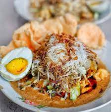

Ketoprak

Ketoprak is one of my favourite foods originating from West Java.
Ketoprak itself is one of the vegetarian options as it does not contain any meat and only use tofu as the protein, drizzled with peanut sauce all over topped with fried shallot and sweet soy sauce.
Below is the ingredient:
- Vermicelli
- Beansprout
- Garlic
- Peanuts
- tofu
- Rice cakes
- Red Chili or Bird's eye chilli
- Palm sugar
Steps for making Ketoprak:
Making ketoprak is simple as you can find many of the ingredients available in the Asian store, especially the peanut sauce. For the sake of the complete guide of making it. I will be giving the instructions on how to make it completely from scratch.
Peanut sauce:
- Deep fry the peanuts or sometimes called monkey nuts, they have a shell that you have to open, but you can buy the opened peanuts in the Asian Store. In saying this, you can also buy an instant peanut paste and boil it in a little amount of water to dissolve it.
- Prepare garlic as much as you like. I really like the garlic smell in the peanut sauce and I usually use more 8-10 cloves.
- Prepare the red chilli or bird's eye chilli as we will need to blend in with the peanut and garlic
- Palm sugar is also available at Asian Store and I have found some local stores selling it, such as Coles and Woolworths
- Once the peanuts are fried, we will put it in the food proccesor and blend it with garlic, chilli, and one piece of palm sugar. Season with salt and white pepper if needed. Add water as needed.
Toppings:
- First, you will need to blanch the beansprout and Vermicelli. Just until they are soft enough to eat and we don't want to overcook it. Leave aside after done
- Prepare the rice cake, you can buy an instant rice cake in Asian store once again. If you want to make it from scratch, look at my guide on How to Make a Rice Cake. Note that Indonesian have a different rice cake than Korea.
- Dice you tofu in the desired size.
Assembly:
- Prepare a plate and firstly put your peanut sauce as the base on the plate.
- Start putting the vermicelli as the second base and beansprout on top of the vermiceli.
- Put tofu and rice cake all together on the side or on top.
- Drizzle with fried shallots and sweet soy sauce
Assemblying a ketoprak is easy enough as you only need to put them on the plate and let the sauce do the magic. The long process is in the sauce making if you choose to it from scratch. Enjoy